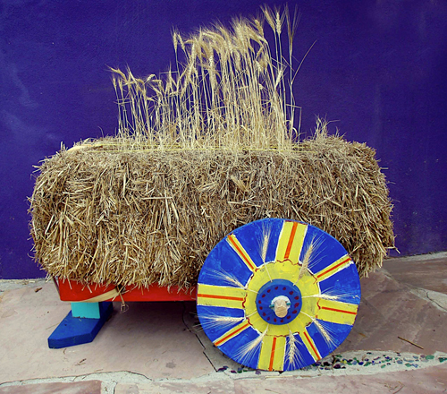
Demeter's Chariot, ready to travel
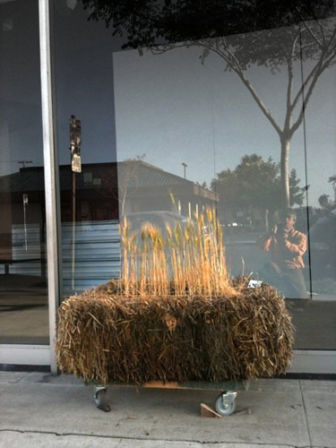
Moveable planter bale in front of
North Park business
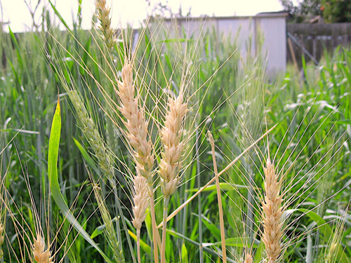
wheat growing
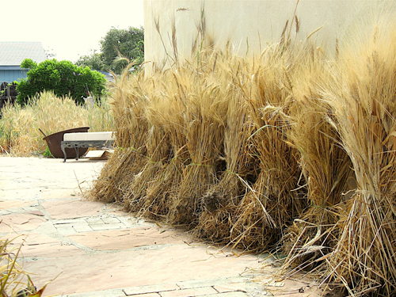
Sheaves of wheat ready to process
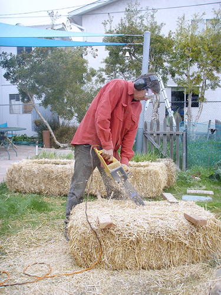
Hollowing out a planter bale
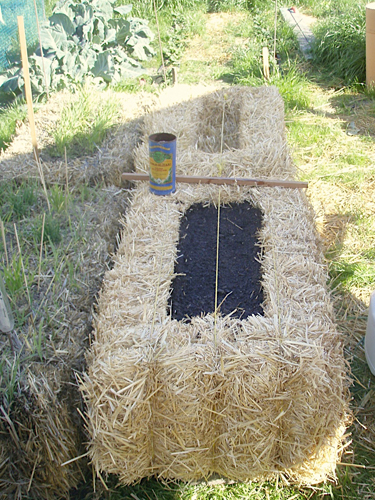
Prototype wheat planter bale
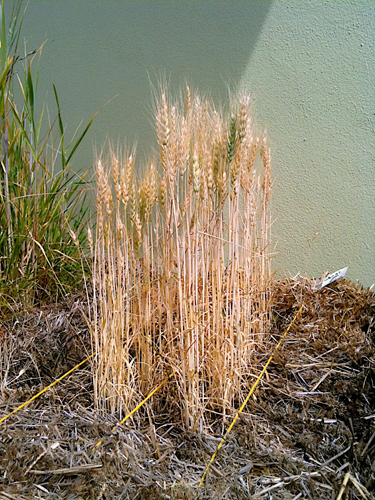
Dry wheat in a planter bale behind Art Produce
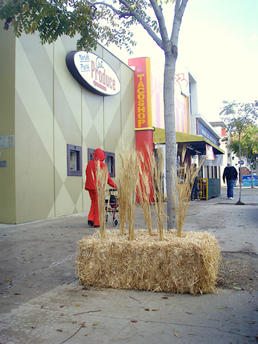
Concept planter bale on University Ave
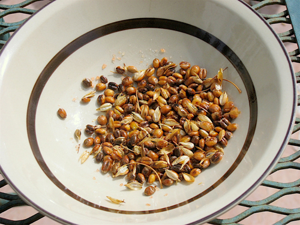
Toasted wheat berries, a delicious snack
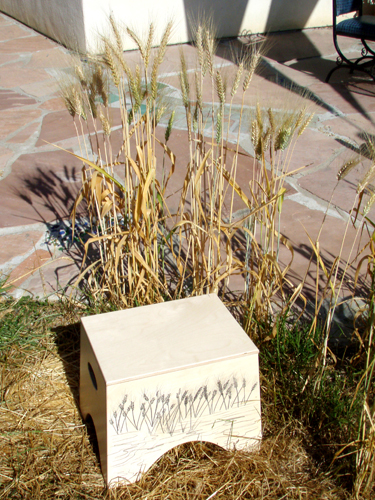
David's handcrafted bench with wheat design
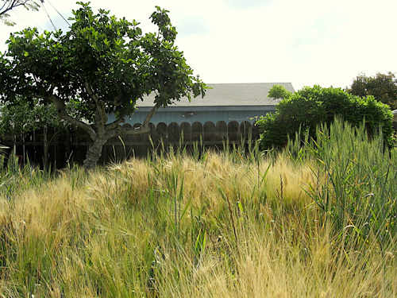
Wheat yard!
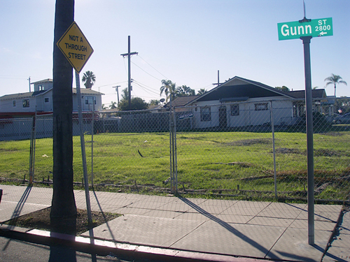
Empty lot at Jefferson Elementary, Jan 2010
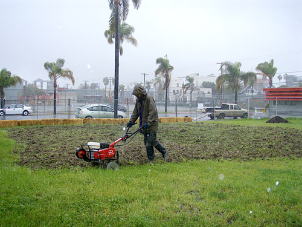
Preparing for planting at the Jefferson Lot
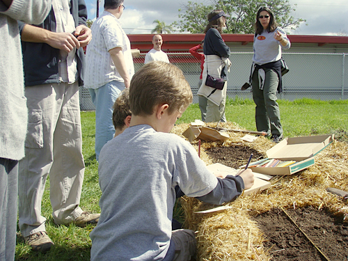
Planting at the Jefferson Lot, Feb 2010
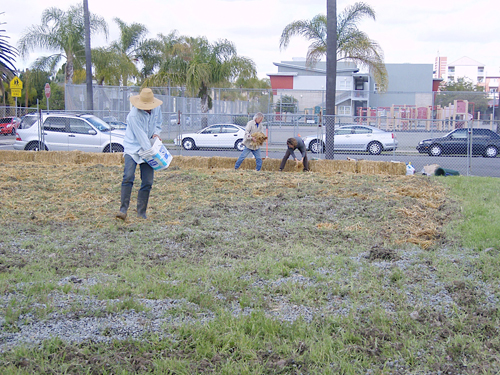
Planting at the Jefferson Lot, Feb 2010
Next